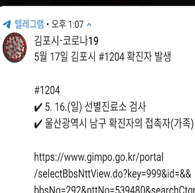
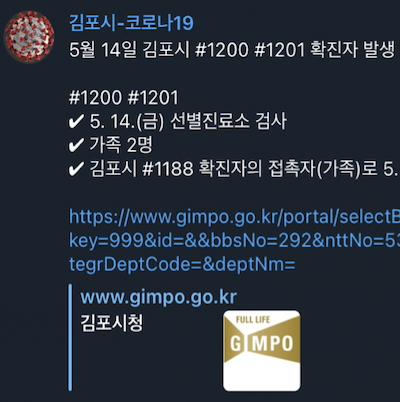
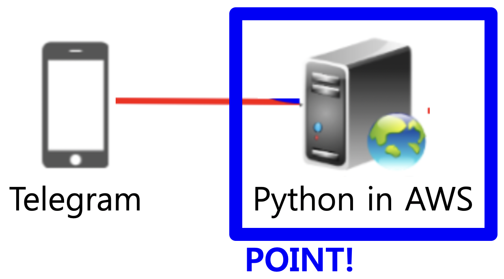

実装機能

確定者が発生した時教える機能
金浦市内に確認者が発生した場合は随時お知らせします。

記録を残す機能
確認者の発生に関する情報を記録として残すことができます。
社会に貢献しようとしたこと
コロナ19 確認者発生時に通知なしで記録のみ残すことができるため、通知に邪魔されずに確認者発生情報を得ることができます。
背景と目的
既存のコロナ19緊急災害メッセージは、確定者発生時にすぐに送信されるため、試みの時もなく通知が鳴り妨げられるという問題があります。 だからといって緊急災難メッセージを遮断すると、確定者発生情報を記録として残せないという問題が生じます。 そこで、確認者発生情報をお知らせなくても得ることができるようにチャットボットを実装しました。
学んだこと
PythonプログラムでTelegramチャットボットを制御する方法を学びました。
PythonでBeautifulSoupにクロールする方法を学びました。
Pythonでsplit関数で文字列を分離する方法を学びました。
進行手順
「チャットボットで自分だけのランソンガールを作る」のソースコードをダウンロードしました。ここで、ソースコードは「telegram.ext」というライブラリを使用しました。
ウェブクロールの例をGoogleで見つけて実行しました。ここで、例はBeautifulSoupを使用しました。
金浦市役所サイトで確定者発生文だけを出させ、「ソースを見る」をクリックしてウェブページコードを綿密に分析しました。その後、split（）関数を活用して、投稿のタイトル、内容、リンクのみを取得するようにしました。
YouTubeに記載されているように、新しいChotbotを作成し、ウェブクロールの例と合わせてクロールして通知します。
確認者の投稿が新しく登場したかどうかを知る必要があります。これは、テキストファイルに最近の投稿のタイトルを保存して定期的に比較する方法を使用しました。テキストファイルがない場合は、新しく作成しました。
このようにして目的のプログラムを実装できました。
能力強化のために最も努力したこと
PythonでChatBot（Telegram）コントローラを実装し、AWSで実行
全体構造

使用技術
Python, Telegram, AWS
開発環境
Python IDLE
追加の説明
「チャットボットで自分だけのランソンガールを作る」ソースコード
ソースコード